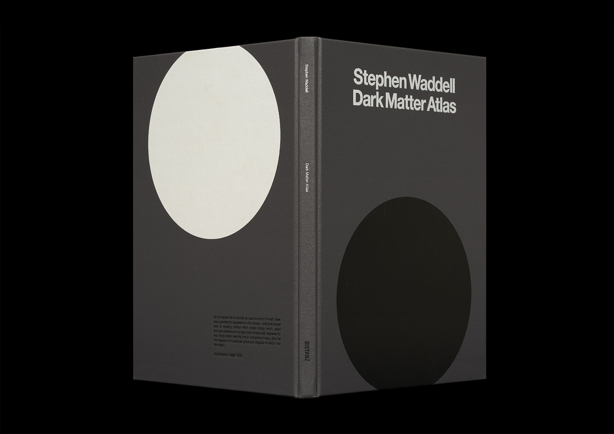
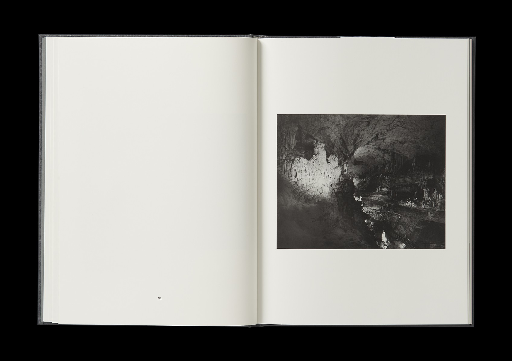
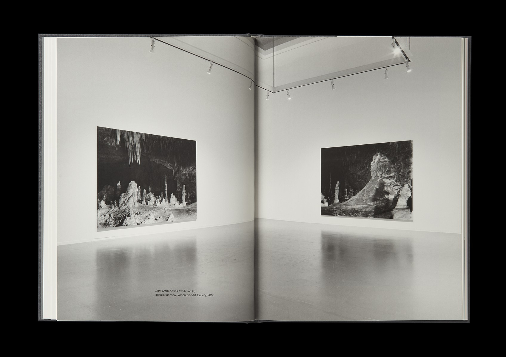
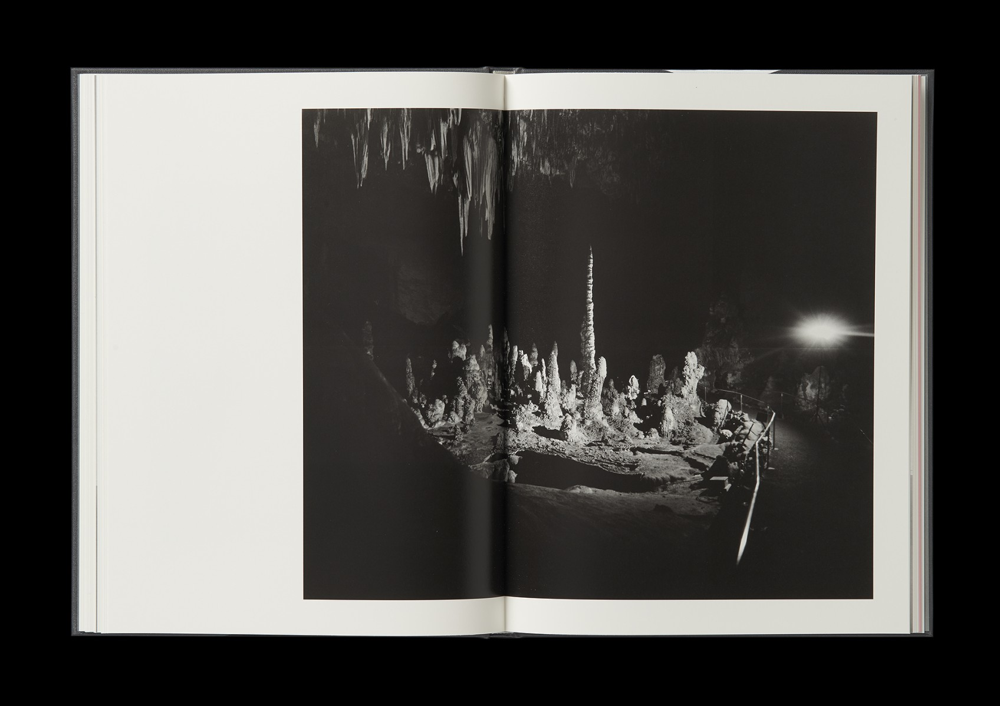
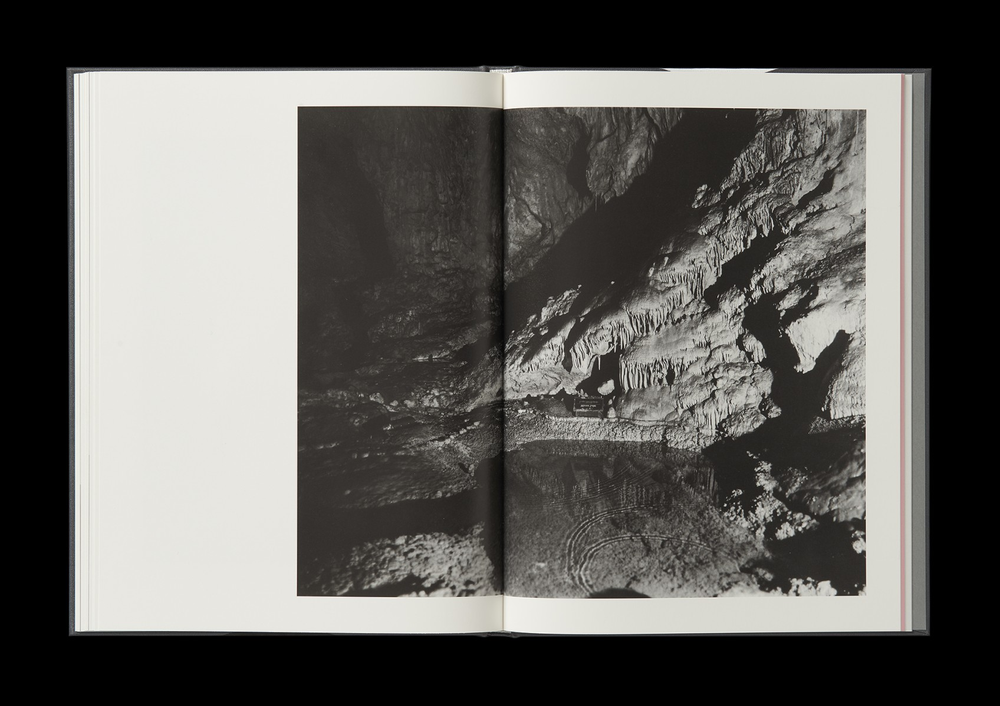
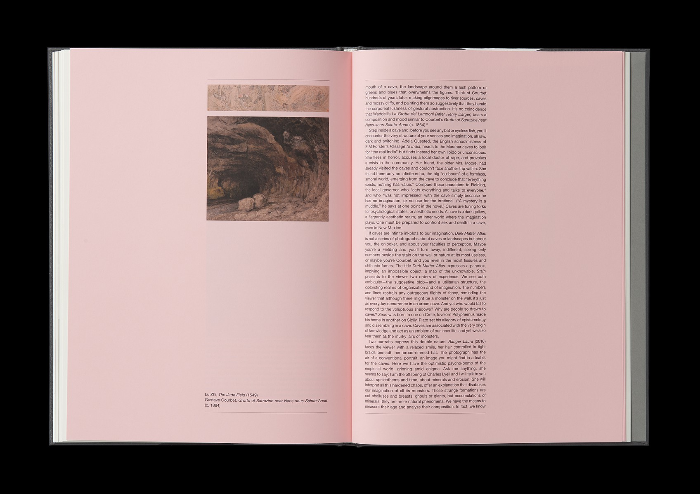

2017
Hardcover
88 pages, 240x320 mm
Publisher: DISTANZ
Foreword: Craig Burnett. Essay: Craig Burnett. Editor: Emma Conner and Meaghan McAneeley.
Photography: Trevor Mills, Rachel Topham and Stephen Waddell.
Reproductions: Danielle Currie.
Design: Henrik Nygren Design
Images: Henrik Nygren
The "Dark Matter Atlas" presents a body of recent photographs in which the artist focuses on caverns in the United States,
Canada, and Lebanon, spaces once difficult to access that are now underground public parks. With an essay by Craig Burnett.
Please contact the artist for purchase: mail@stephenwaddell.com





